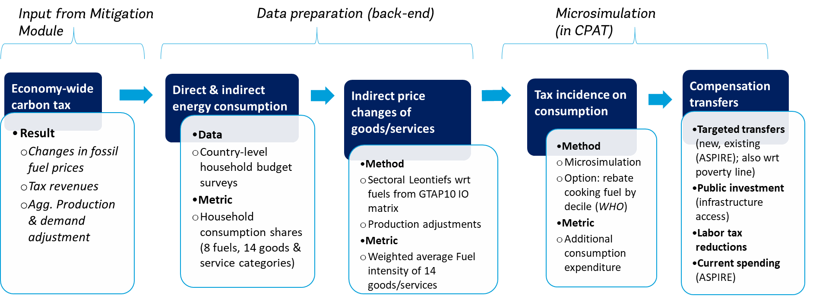

5 Distribution Module
5.1 Introduction
Income inequality, poverty and, more generally, social justice considerations are increasingly becoming a centerpiece of governments’ fiscal policy decisions. With the COVID-19 pandemic leading to sharp increases in inequality and poverty, distributional considerations have become even more relevant to decision-makers. In the realm of environmental fiscal reforms, equity and poverty concerns often receive more political attention than in the context of ‘traditional’ fiscal reforms. Public acceptance is strongly driven by reforms’ perceived fairness and impact on low-income households (Klenert et al. (2018); Baranzini et al. (2017)).
The Distribution Module of CPAT1.0 aims to inform the spread of the immediate fiscal incidence across (vertical distribution) and within (horizontal distribution) income groups, focusing on consumption effects and compensatory schemes. Tax-induced consumer price changes and revenue recycling in the form of direct transfers have been at the center of the literature on fiscal distribution, since such salient, short-term effects are arguably the most relevant from a political economy perspective.1
The Distribution Module allows the user to estimate the carbon tax incidence on consumption, taking into account the direct effect from the use of fuels, as well as the indirect effect from the consumption of other, non-fuel/-energy goods and services. We follow the standard approach in the literature, combining household budget survey (HBS) information with input-output (IO) data, adjusted such that they yield the same effective carbon price revenues as the ones produced by the Mitigation Module (see Hubacek et al. (2017); Olivier and Ruggeri Laderchi (2018); Vogt-Schilb et al. (2019); Schaffitzel et al. (2020); and Dorband et al. (2019)). Country-fuel-sector- price increases are based on scenario-specific estimates from CPAT’s Mitigation Module. Further, the user is provided with two options to relax the typical IO assumptions of full cost-push impacts and absence of behavioral adjustments. Additionally, there is one option to rebate the price increases of a country’s primary cooking fossil fuel to selected bottom deciles to help prevent them from switching to biomass. Results from the Distribution Module have been cross-checked and verified against peer-reviewed country case studies (Silva Freitas et al. (2016); Farrell (2017); Wier et al. (2005); Jiang and Shao (2014); and sterner2012fuel). See Table VI-4 in the Appendix.
Four modes of direct and indirect transfer schemes can be simulated, once the user inputs the share of revenues allocated under each scheme type: i) new or existing targeted transfers (for which the user can decide the targeted percentiles, among other features); ii) transfers towards public investment in infrastructure access; and iii) scaling up an existing social protection scheme (following the targeting of the initial scheme)), and iv) reforming countries’ personal income tax (PIT) schemes. The revenue amounts available for redistribution are based on scenario-specific estimates from the Mitigation Module. New or existing targeted transfers are universal among the targeted percentiles, while infrastructure transfers are targeted to those households without initial access to clean water, affordable electricity, clean sanitation, Information and Communication Technologies (ICT), or public transport, based on HBS microdata. Revenue recycling that increases current public spending is proportional to the existing social protection schemes, such as social assistance, insurance, or in-kind benefit schemes. Further to the above, transfer scheme targeting is also available for decile-specific population shares that are below international poverty lines (incomes of 1.9 or 3.2 2011 PPP USD/day) via “poverty-conditional cash transfers”.
Both negative consumption effects as well as positive compensation scheme effects are expressed as shares of pre-reform consumption and in absolute, per-capita monetary terms on a decile level, separately for the rural, urban, and overall (or national) populations.2 For vertical distribution graphs, the user can further choose between decile mean and median consumption data inputs. Horizontal distribution between the 25th and 75th percentile of consumption data inputs within each decile is available for consumption effects (both absent as well as net of compensation schemes).
5.1.1 Summary: Distribution Module Overview
5.1.1.1 Problem definition and approach
Both taxation and spending policies may aim to redistribute in a way that post-tax income equality is ameliorated relative to pre-tax income equality, often with a special emphasis on the poorest segments of the population. Thus, the progressivity or regressivity (that is, the vertical incidence of fiscal policy options across income groups) are policy-relevant considerations. In addition, horizontal distribution (i.e., distribution within the same income group) has gained increasing attention, as the within-income-group spread of the incidence (expressed as a share of consumption) has been found to be potentially larger than the spread of incidence across income groups due to heterogeneous socioeconomic conditions (Fischer and Pizer (2019)). Horizontal distributional policy analysis is of particular interest with respect to political economy as well as poverty considerations. Identifying the parts of the population which will benefit/pay the most, relative to their income, is crucial to designing and evaluating any tax or social assistance scheme.
We measure distributional effects of both tax incidence and revenue recycling in a narrow monetary sense, proxied by relative changes in consumption. Our estimates overstate the negative taxation effects, while understating the positive effects of climate change mitigation and compensation measures. Specifically, the tax incidence analysis focuses on the consumption channel, disregarding structural effects on wages and overall employment, which may positively outweigh consumption-side effects, as they tend to be positive, larger and progressive (Markandya et al. (2016); Metcalf (2019)). In addition, we disregard the large health co-benefits from improved air and environmental quality as well as reduced traffic accidents, road damage and congestion (please, refer to Technical Appendices of Air Pollution and Transport Modules for further details).
CPAT’s proposed compensation schemes can facilitate the reduction of more fundamental inequalities, due to their economic co-benefits of improved health, education, and opportunity. in this sense, proxying compensation scheme benefits to households by using their monetary amounts is an underestimate of said benefits. For example, sustained conditional cash transfer programs to poorer households can significantly improve child health and educational outcomes and, thus, promote the formation of human capital (Cahyadi et al. (2020)). Unconditional cash transfers to the ultra-poor can accelerate the energy transition to cleaner fuels and reduce energy poverty (Aung et al. (2021)). Increasing the quality and quantity of and access to infrastructure has been found to significantly reduce income inequality, poverty and to accelerate growth (Calderon and Servén (2004)). Furthermore, scaled-up social protection measures and access to clean sanitation or clean energy can have similar positive, long-term effects regarding development and human capital outcomes. Finally, improving PIT progressivity has been associated with lower levels of income inequality (Gerber et al. (2020)).
5.1.1.2 Functionalities
CPAT’s Distribution Module enables ex-ante analyses necessary for informed decision making with respect to how equitable and pro-poor environmental fiscal reform packages would be across countries. As there is no “one-size-fits-all” fiscal reform, the user can choose between several policy design options, particularly with respect to distributional implications within and across household income groups.
The Distribution Module includes the following features:
Tax incidence:
Consumption effect (from direct and indirect energy consumption)
Adjustments to consumption effect:
Mitigation-adjusted tax incidence (“behavioral and structural change”)
“Emissions-based adjustment of product price changes” (implied revenues on households from IO data consistent with calculated revenues in Mitigation Module)
Reduced cost pass-through (of energy price increases)
Behavioral adjustments, considering consumption decile-specific price elasticities of demand
Special tax rebate for poor households: exemption of cooking fuels
Compensatory scheme incidence:
Various transfer schemes:
Targeted transfers (new or existing social protection scheme(s))
Public investment (in infrastructure access spending – e.g., toward SDGs, proxied as cash
Current (non-targeted) spending (e.g., scaling up existing social protection scheme(s))Choice of receiving income percentiles and precision of targeting under “Targeted transfers”
Cash transfers to people below poverty line: targeting of decile-specific population that is below international poverty lines (incomes of 1.9 or 3.2 2011 PPP USD/day)
Reduction in PIT liabilities
Socioeconomic heterogeneity: results using median/mean HBS decile-level data, across overall, rural and urban (sub-)samples, horizontal/vertical distribution of effects, consumption effects absent (and net of) compensation schemes Some features may not be available for all countries covered, due to data-related availability constraints. The Distribution sheet in CPAT lists the countries available in the Module. .
The full Guiding Package for CPAT microdata harmonization, i.e. for preparing a country’s household microdata for inclusion in the Distribution Module, includes a Codebook, supplementary Guidebook, as well as two coding templates (in STATA format) containing data harmonization, preparation and cleaning processes, and can be provided upon request.
5.2 Household budget survey preparation
Estimations of the distribution of carbon tax burdens as well as revenue recycling scheme benefits are largely based on microdata in the form of national household budget surveys (HBSs). This section describes how the primary household-level data are harmonized and aggregated before they are incorporated into CPAT.
5.2.1 Household budget shares
\(\pi^{\text{dg}}\) is the budget share of expenditures on a given, category \(g\) item by a household in decile \(d\). It represents the consumption as observed in a survey year in a specific country. Household consumption shares are processed from HBSs, which are country-specific and heterogenous in terms of structure and coverage. Where possible, CPAT aims to incorporate the latest HBS of the country. This section describes how these shares are calculated.
First \(C_{j}^{g}\), household \(j\)’s annual consumption on expenditure category \(g\), is estimated from HBSs. There are two types of expenditure categories: i) direct fuel/energy consumption expenditures: electricity, natural gas, gasoline, diesel, coal, oil/lubricants, LPG, kerosene, charcoal, ethanol and firewood (listed in Figure 5.1) and ii) non-direct fuel/energy consumption expenditure3: appliances, chemicals, clothing, communications, education, food, health services, housing, paper, pharmaceuticals and medicine, recreation and tourism, transportation equipment, public transportation, and other expenditures Table 5.2. Expenditure items in household surveys are mapped to these CPAT expenditure categories4 and aggregated to create household consumption under said categories.
In addition to budget shares, CPAT captures households’ poverty status with respect to the PPP USD 2011 1.9 and 3.2 daily poverty lines. Dummy variables indicate position with respect to the poverty line(s) based on households’ per capita total consumption including actual (not imputed) rent. Poverty incidence is then summed by decile and informs poverty-conditional cash transfers CPAT.
Subsequently, household budget shares \(\pi_{j}^{g}\) are calculated for each household \(j\) from by dividing each household’s consumption of each expenditure category \(g\) by total household consumption (\(C_{j}\)). Total consumption (for the purposes of budget share estimation) is the sum of consumption in all expenditure categories g, where the category “housing” (see Table VI-3) does not include imputed rent of a dwelling.5
\[\pi_{j}^{g} = \frac{C_{j}^{g}}{C_{j}} = \frac{C_{j}^{g}}{\sum C_{j}^{g}} \tag{5.1}\]
Household budget shares \(\pi_{j}^{g}\) are aggregated at the household per-capita consumption decile to arrive at \(\pi^{\text{dg}}\). Household per-capita consumption-based decile generation (as well as any associated percentile statistics) are weighed by the corresponding survey per-capita population weights (\(popw\)) to ensure sample representativeness at the national level. Household per-capita consumption (\(cons\_ pc)\) for the purposes of decile generation is total household consumption including imputed rent (\(tot\_cons\)) divided by household size (\(hhsize\)): \(cons\_ pc = tot\_cons/hhsize\). Following the literature, CPAT, thus, proxies lifetime income, or standard of living, with consumption expenditures, as they are widely considered a better proxy for welfare than nominal (e.g., wage) income (Deaton (1997)).
\(\pi^{\text{dg}}\) is estimated for the overall (i.e., national) sample of households as well as separately for urban and rural households. In addition to average household budget shares, the median, 25th percentile, and 75th percentile statistics are generated for all three samples (overall, urban and rural) at the decile level.
Outlier treatment: Any non-missing consumption shares that lie above three (3) standard deviations (SD) of their corresponding (popw-weighted) means in each specific expenditure category are treated as outliers. The outliers are replaced, by decile, with the decile’s popw-weighted mean household consumption share in the specific expenditure category.
Decile sensitivity check: Household per-capita consumption deciles are based on total household consumption, including imputed rent. The sensitivity of these deciles is checked against the number of households shifting deciles when total household consumption is defined as excluding any rent (tot_cons_norent in 1).
5.2.2 Household infrastructure access
In addition to household budget shares, indicators for household access to infrastructure are generated and used within CPAT. \(\digamma^{\text{di}}\) is the weighted share of households (in percent) within decile d which have access to infrastructure category i. These categories are access to i) water; ii) electricity; iii) sanitation; iv) ICT; and v) public transportation (listed and defined in Table 5.3 under “infrastructure access”).
First, \(\digamma_{j}^{i}\), a binary variable taking the value of 1 if a household has access to infrastructure category I (0 otherwise), is generated for each household j in the HBS. Next, \(\digamma^{\text{di}}\), the popw-weighted average share of \(\digamma_{j}^{i}\) , is calculated for each decile. Note that, since weights are per capita weights, infrastructure access shares represent individuals (not households). Shares are calculated for the overall, urban, and rural sub-samples.
5.3 Microsimulation Method
CPAT’s Distribution Module enables ex-ante analysis of distributional effects of user-defined environmental fiscal reform packages, focusing on consumption effects and compensatory schemes (see Figure 5.1 for an overview). Section 5.3.1 outlines the carbon tax incidence analysis, Section 5.3.2 presents further options with regard to tax incidence estimates; Section 5.4 introduces the estimation of compensatory schemes, including transfers and reductions in PIT liabilities.

5.3.1 Tax incidence analysis
CPAT assesses the consumption incidence of carbon fiscal policies across different income groups by means of a microsimulation model. Consumption effects are measured as the costs of maintaining pre-reform consumption (i.e., households’ additional expenditures), observed from country-level HBS data, with the user-defined carbon tax scenario in place. Thus, this microsimulation focuses on the short-term consumption changes in terms of compensating variation, assuming fixed consumption patterns. In other words, households are assumed not to adjust their behavior in response to the carbon price, and consumption effects represent upper-bound estimates (Dorband et al 2019). Estimating price and income elasticities of demand, differentiated across countries, income levels and energy/non-energy products is a data- and resource-intensive task, which can be partly integrated into the analysis via a user option to apply decile-specific price elasticities of demand (based on USDA data6) to said microsimulation estimates (see also Section 5.3.2).
The consumer incidence of an energy-based upstream carbon tax is determined by the tax-induced price changes of fossil fuels, as well as by the direct and indirect energy consumption bundles of households; that is, by households’ direct fuel combustion or use of electricity, and the indirect consumption of energy embedded in other goods and services. Thus, the proportion of additional expenditures P of individual j after the policy intervention is a multiplicative function of (i) average energy intensities \(\overline{e_{\text{fg}}}\) (USD/USD) of fuel f of consumption items from each sector g (note that f ∈ g); (ii) total expenditures \(C\); and (iii) the tax rate t for fuel f in sector g, expressed as the price increase post- (p2) relative to pre-reform (p1) (USDp2/USDp1) (c.f. endnote 3).
\[p_{j} = \sum_{\text{fg}}p_{\text{fgj}} = \frac{\sum_{\text{fg}}{\overline{e_{\text{fg}}}\ *t_{\text{fg}}* C_{\text{gj}}}}{C_{j}} \;\; , f \in g \tag{5.2}\]
The tax-induced price changes of fossil fuels (c.f. Table 5.1 for a list of fuels), which determine households’ additional expenditures on direct fuel consumption (for f=g, in ?eq-5_3), are a function of fuels’ carbon intensities, \(e_{f}\), measured by emissions factors, and pre-existing price distortions in the Mitigation Module. For each user-defined carbon fiscal scenario, price changes are obtained from the Mitigation Module (see respective Mitigation Module Documentation). As price increases vary for each fuel by sector (due to varying emissions factors and baseline pricing), price changes are estimated for each country, year and fuel-sector pair \(t_{\text{fg}}\), where “sectors” here are power, industry, and residential. Residential sector fuel price changes are used to calculate the direct consumption effects.
The tax-induced price changes of goods and services based on the domestic carbon price, which determine households’ additional expenditures on indirect fuel consumption (for f ∉ g, in ?eq-5_3), follow a standard input-output (IO) approach. Consistent with much of the carbon tax literature, all price increases resulting from the user-defined carbon fiscal reform are expected to be fully passed forward, from producers and suppliers to final consumers. Estimated consumer price increases are, thus, absolute upper bounds.7 Adapted from basic IO analyses (cf. Leontief (1986); Minx et al. (2009)), household energy intensities \(\overline{e_{g}}\) result as entries of the vector:
\[e_{g} = f\left( I - A \right)^{- 1}, \; f \notin g \tag{5.3}\]
where each fossil fuel sector, f is a vector assigning an energy intensity coefficient to each non-fuel sector. The $( I - A )^{- 1}$matrix, or Leontief inverse (cf. Leontief, 1986), accounts for all upstream inputs that are required to produce one unit of final demand for each sector. \(I\) is the identity matrix and \(\text{A\ }\)is a normalized matrix of technical coefficients based on inter-sectoral commodity flows.
For (IO) data, we use the Global Trade Analysis Project (GTAP-10), (Aguiar et al. (2019)) to compute fossil fuel/energy intensities, and respective price changes for non-fuel sectors. The GTAP-10 database has several advantages. First, it is a consistent global database which harmonizes and scales data for 65 disaggregated sectors (g) and 141 world regions to the year 2014. Such harmonized data improve comparability across country-specific results in CPAT. Important for the estimation of sectoral effects from country-fuel-sector price changes is that GTAP-10 provides a more granular disaggregation of energy sectors than other global IO data with similar regional coverage (e.g., EORA). Yet, while CPAT distinguishes between eight fossil fuel/energy carriers, GTAP-10 includes only five fossil fuel sectors and electricity. Based on the concordance table, for GTAP’s “Petroleum and coke products” (p_c) sector, CPAT calculates the weighted average price change, using the economy-wide fuel use volumes of these products (in ktoe from IEA 2020) as weights.
| CPAT fossil fuel (f) | GTAP10 sector (f) |
| Coal (coa) | coa |
| Electricity (ely) | ely |
| Natural gas (nga) | gas/gdt |
| Other oil products (oop) | oil |
| Gasoline (gso) Diesel (die) LPG (lpg) Kerosene (ker) | p_c |
Finally, sectoral energy intensities, \(e_{g}\), and household expenditures, \(C_{\text{gj}}\), are produced for 14 indirect fuel consumption categories. Household consumption is computed as described in Section 5.2 from primary HBS data. Individual consumer items reported in the surveys are mapped to the respective GTAP sectors, which, in turn, are mapped to the 14 consumption categories (c.f. Table 5.1 for concordance between categories and sectors). Thus, all of the 59 non-energy GTAP sectors, which produce end-consumer goods and services, are aggregated into 14 average product categories. Groupings are determined on the grounds of comparable average levels of energy-intensity, as well as to match IEA sectoral definitions used in CPAT. For a complete concordance table among relevant sources of data, please, refer to CPAT’s ‘Mapping’ tab. Thus, for each GTAP fuel sector, \(f\), energy intensities, \(e_{g}\) in Equation 5.3, of the 14 CPAT consumption categories, g, are a weighted average of the energy intensities of the respective non-fuel GTAP sectors, weighted by GTAP’s household final demand vector, \(Y\).
The CPAT Distribution Module is an improvement over the standard approach in the literature. CPAT explicitly models a domestic carbon price reform. This means, Leontiefs between fossil fuels and sectors of production reflect only the domestically burned fuels. ‘Embedded’ fuel inputs in imports are not considered in the carbon price-induced price change of goods and services. Particularly in countries with high shares of imports in the goods and services consumed domestically, this approach may yield lower, but more accurate, results on consumption incidence.
5.3.2 Optional features for tax incidence analysis
5.3.2.1 Mitigation-adjusted tax incidence
The Module provides the user with an option to roughly assess how the consumption effects would decrease if emissions reductions induced by the carbon price reform were taken into account. This adjustment scales down overall consumer price increases relative to the scheme’s mitigation effect, thus relaxing the cost-push assumption. The Mitigation Module provides estimates of economy-wide GHG emissions reductions and tax revenues from carbon taxation over time. As noted above, the sectorally more disaggregated Distribution Module is based on IO Leontief production functions. This assumes fixed technical coefficients and, thus, full price pass-through, such that the estimated tax incidence is to be understood as an absolute upper bound, or short-term, estimate. CPAT provides the user with an approximate measure of the extent to which consumption effects would decrease if behavioral responses and structural change were accounted for: for the (future) year of interest, CPAT compares the tax revenue estimates of the elasticities-driven Mitigation Module with the tax revenues of the IO-based Distribution Module8, i.e. the proportion of revenues raised after and before taking into account behavioral responses:
Let the economy-wide tax burden, or total tax revenues, estimated in the Mitigation Module be \(P_{M}^{y}\) for year y, and in the Distribution Module be \(P_{D}^{y}\) (\(P_{M}^{y} < P_{D}^{y}\)), where:
\[P_{D} = \sum_{j}{p_{j}*C_{j}} \tag{5.4}\]
represents the total revenues expected based on representative HBS consumption data Cj. As survey data aggregates usually do not match national accounts, and as total revenues should compare for the year of interest in the simulation, CPAT scales \(P_{D}\) to match the national accounts in the year of interest y (2022 \(\leq\) y \(\leq\) 2030), such that:
\[P_{D}^{y} = P_{D}* \frac{\text{GDP}^{y}*\theta_{c}}{\sum C_{j}} \tag{5.5}\]
where GDPy represents the expected GDP in the year of interest in the simulation and \(\theta_{c}\) represents the final consumption expenditure to GDP ratio for the latest available year from World Bank’s World Development Indicators (WDI) database.9 Then, the downward adjustment factor to the tax incidence on consumers, \(p_{\text{Adj}}\) follows as:
\[p_{\text{Adj}} = \frac{P_{D}^{y} - P_{M}^{y}}{P_{D}^{y}} \; , \;P_{M}^{y} < P_{D}^{y} \tag{5.6}\]
The adjustment factor \(p_{\text{Adj}}\) is applied homogenously across the population, represented as a positive relative consumption effect in CPAT. This approach will be refined in subsequent versions of CPAT: estimating with more precision the distributional effects of relaxing the assumption of full pass-through of tax-induced price changes to the end-consumer requires sophisticated data on production- and consumption-side energy price elasticities. Within countries, households of different income strata consume different product bundles (as discussed in the extensive literature on Engel Curves). Thus, for a thorough distributional analysis one needs to determine: a) how price elasticities vary across sectors/products; and b) how price elasticities of demand for products vary with income.
5.3.2.2 Decile-specific price elasticities of demand
CPAT allows the user to model short-term adjustments on the demand side alone, using decile-, country-, and item-specific price elasticities of demand based on (Muhammad et al., 2011). The price elasticities provided are by country and consumption category (COICOP), as well as for high, middle and low income countries. Based on standard concordance tables (ISIC Rev. 4 and CPC 2.1), CPAT maps the elasticities to CPAT consumption categories. CPAT, then, adopts the countries’ elasticity reported for the middle deciles and assumes that the upper and lower deciles’ elasticities will deviate from the elasticity reported by the same proportion as the elasticities for low- and high-income countries deviate from that of middle-income countries for each consumption item. Following the same approach as in the Mitigation Module, the country-decile-specific price elasticity of demand for consumption category g, \({\epsilon_{\text{use}}}^{g}\) is changing \(C_{j}^{g}\) as follows:
\[C_{j}^{g}* \left( \frac{p_{t}}{p_{t - 1}} \right)^{\epsilon_{\text{use}}} \tag{5.7}\]
5.3.2.3 Imperfect pass-through
CPAT also provides the user with the option to allow producers to absorb, i.e. not “pass through”, part of the tax-induced price increase. There is ample evidence that (irrespective of any fuel saving/switching behavior) firms pass forward only a portion of the tax-induced energy price increase (Ganapati, Shapiro, and Walker (2020); Abdallah and Le (2020)). The Distribution Module differentiates pass-through coefficients for 14 transport and industrial sectors, with coefficients ranging from 0.7 to 0.9, and averaging 0.8. Coefficients \(\gamma_{g}\$(\)_{g} )$ are applied to the tax rate t for sector g, expressed as the price increase post- relative to pre-reform 10 , such that the downward-adjusted energy price change \({\ t}_{\text{fg}}^{*}\) can be expressed as:
\[t_{\text{fg}}^{*} = t_{\text{fg}}*\gamma_{g} \tag{5.8}\]
5.3.2.4 Emissions-based adjustment of sectoral price changes
As described above, the incidence of goods’ and services’ price changes on consumers is based on GTAP-related fuel-sector Leontiefs. Multiplying the Leontief with the respective fuel’s price change, we obtain ‘indirect’ consumer price changes (in the static option). This multiplication implicitly introduces a price assumption to the GTAP monetary flow of energy: based on observed fuel prices (USD/volume or weight of fuel in 2021), the Mitigation Module estimates expected fuel price changes. Thus, this calculation assumes a corresponding energy flow. However, this energy flow might not necessarily match the observed energy flow by fuel and sector (which CPAT takes from IEA Energy Balances). To correct for this potential imbalance, CPAT allows the user to adjust consumer price incidence by theoretical time-zero revenue flows from the carbon pricing reform modelled. This means that, using the best available empirical data (IEA Energy Balances, GAINS emissions factors, and IMF combined fuel price data), CPAT calculates the revenues that would be raised if no price-induced adjustments were to take place – hence the term time-zero revenues. These theoretical revenue streams are calculated by fuel and CPAT sector. The final demand portion of this price incidence on the economy (usually around 60%, as the remainder is accounted for by goods which are exported or consumed by government and fixed capital formation) is equivalent to the static consumption incidence which should be reflected in the analysis. CPAT, thus, allows the user to scale the baseline incidence to this level. If chosen, additional adjustments are, then, calculated using this new baseline.
5.3.2.5 Cooking-fuel adjusted tax incidence
For selected deciles (starting from the poorest one), CPAT provides the user with the option to exclude from taxation the fossil fuel which is used as a primary cooking fuel. The rationale is as follows: when taxing primary cooking fuels (e.g., LPG), there may be a risk of households being pushed into using traditional, unsustainable biomass (e.g., firewood or charcoal). Therefore, the user can model distributional effects of carbon taxes when households in the bottom (e.g., one or two) deciles do not face an increase in the price of their primary cooking fossil fuel. From a policy design standpoint, this option is to be understood as a rebate. That is, the household will pay the tax when buying the fuel but will receive a compensatory transfer for its cooking needs. Such rebate schemes have received particular attention during India’s LPG subsidy reform, which implemented the Direct Benefit Transfer Scheme for LPG (“Pratyaksha Hastaantarit Laabh (PAHAL)”) program.11
Primary cooking fossil fuels are identified for each country based on the World Health Organization (WHO) Household Energy Database12. Covering 161 countries, the database collects and harmonizes household survey data on the portion of the population cooking with each of fourteen disaggregated fuels, considering surveys between 1970-2014. For each country, and the latest available year of survey data, CPAT determines which of the eight fossil fuels listed in Table 5.1 is most widely used for cooking.
5.4 Incidence of compensatory transfers
Given countries’ heterogeneous development status, and political and socioeconomic realities, the design of environmental fiscal reforms varies widely. CPAT provides the user with various options for recycling revenues from environmental fiscal policy scenarios, including via direct and indirect support schemes. Direct transfer schemes to households provide a particularly suitable instrument for increasing public acceptance of tax reforms. This is because they are salient, immediate, and well-targetable. Additionally, direct transfer programs are widely adopted globally, as they have proven to be an effective means of achieving key development goals, with some of them being more administratively simple to implement, due to digitization.
In CPAT, the user can choose among three general options for redistribution via transfers to households. All three redistribution options are modelled as direct, per capita payments averaged by deciles:
Decile-targeted transfers (new or existing social protection scheme(s))
Public investment (in infrastructure access)
Current spending (e.g., scaling up existing social protection scheme(s))
Labor tax reforms (as personal income tax reforms)
5.4.1 Targeted and infrastructure-based transfers
Beyond the choice among (a)-c) above), the following four parameters are user-defined:
the percentage share of total revenues to be used for (new, existing) targeted and/or public spending transfers;
(for new/existing targeted transfers only) the per capita income percentiles to receive the chosen transfer (starting from the bottom of the income distribution; \((C_{jT} \leq p(T) C_j)\);
(for new/existing targeted transfers only) the “coverage rate”, i.e. the share of the population targeted actually receiving the transfer; and
(for new/existing targeted transfers only) the “leakage rate”, i.e. the share of the untargeted population receiving the transfer.
Options 3. and 4. allow the user to consider imperfect implementation of cash transfer schemes, such that parts of the population which would qualify for the transfer do not receive it, while other parts of the population (not qualifying) do so, due to imperfect targeting. Such leakage is assumed to be spread equally across the non-targeted population.
The amount of the targeted, per capita transfer, T, for the targeted population, popT, is calculated by dividing total transferred revenues by the total eligible or ‘targeted’ population in the year of interest y, such that:
\[T^{y} = \frac{P_{M}^{y}}{\text{pop}_{T}^{y}} \tag{5.9}\]
Where the survey population (i.e., the sum of per capita population weights)13 is scaled to match the projected national accounts, \(pop\), based on the IMF’s 2022 World Economic Outlook vintage, for the year of interest, such that:
\[\text{pop}*{T}^{y} = (\sum \text{popw}_{T})* \theta_{\text{pop}}^{y} \tag{5.10}\]
where
\[\theta_{\text{pop}}^{y} = \ \frac{\text{pop}^{y}}{\sum\text{popw}} \tag{5.11}\]
New targeted transfers are conditional on per capita consumption (user-choice 2. above). Thus, the average per capita transfer, \(T_{d}^{y}\), for decile d depends on the portion of the decile population, \(\text{pop}_{T}^{\text{dy}}\) , below the targeted consumption threshold (i.e. for which \(C_{jT} \leq p(T) C_j\)) such that:
\[T_{d\ }^{y} = \ T^{y}*\frac{\sum \text{pop}_{T}^{\text{dy}}}{\sum \text{pop}^{\text{dy}}} \tag{5.12}\]
Transfers toward infrastructure access are received only by those individuals without initial access to infrastructure type i, \(\digamma_{j}^{i}\) (refer to Section 5.2 for details). The user can choose between five different types of infrastructure provision: CPAT defines infrastructure access in line with the WHO’s WASH database14 and WB WDI database indicators as follows:
Access to improved water source: piped water on premises (piped household water connection located inside the user’s dwelling, plot or yard), other improved drinking water sources public taps or standpipes, tube wells or boreholes, protected dug wells, protected springs, and rainwater collection
Access to improved sanitation facilities: flush/pour flush (to piped sewer system, septic tank, pit latrine), ventilated improved pit (VIP) latrine, pit latrine with slab, and composting toilet
Access to electricity: household connection to local/village/national grid/network; not: battery, generator, PV system
Access to information & communication technology (ICT): ownership of mobile phone/computer, household internet access
Access to public transport
The portion of the decile population, \(\text{pop}_{T}^{\text{dy}}\), receiving the transfer, as per Equation 5.12 is calculated based on the weighted share of households in decile d who have access to infrastructure category i, \(\digamma^{\text{di}}\), such that
\[\text{pop}_{\text{Ti}}^{\text{dy}} = \sum_{d = 1}^{10}\text{pop}^{\text{dy}}*(1 - \digamma^{\text{di}}) \tag{5.13}\]
5.4.2 Transfers through existing social protection schemes
Policy makers may favor extending existing social safety nets for the transfer of carbon tax revenues to households. CPAT, thus, provides the option to proportionally scale up existing social protection schemes, based on the Atlas of Social Protection Indicators of Resilience and Equity (ASPIRE) dataset. For 104 countries, ASPIRE provides quintile-level estimates of per capita transfers received through various benefit schemes, including social assistance measures such as targeted subsidies, in-kind assistance and existing cash transfer programs, labor market protection schemes as well as social insurance (please, refer to the ASPIRE documentation for a full catalog of covered schemes by country15).
As CPAT simulates a proportional scaling of existing schemes, it first determines the proportion $A$by which the protection scheme a can be scaled up. Following Equation 5.9 above, CPAT defines:
\[{\mathrm{\Delta}A}_{a}^{y} = \frac{P_{M}^{y}}{A_{a}^{y}} \tag{5.14}\]
where \(A_{a}^{y}\) is the inflation-adjusted total government spending on protection scheme a in the year of interest y. For calculating total government spending, CPAT first multiplies per capita quintile transfer amounts by a fifth of the population popy in the year of interest y, to arrive at total spending by quintile, which is, then, summed up. CPAT arrives at average decile transfers assuming that every two deciles receive the same amount (in per capita terms) as their corresponding quintile (e.g., deciles 1 and 2 receive the per-capita transfer of quintile 1 and so on). The approach described here (in tandem with options 1-4 listed under Section 5.4.1 above) also applies when users choose to recycle carbon tax revenues via existing (as opposed to new) targeted transfers.
5.4.3 Carbon Price Revenue Recycling via Personal Income Tax Reductions
5.4.3.1 Data Requirements and Setup
The distributional effects of carbon price (CP) revenue recycling via personal income tax (PIT) reductions depend on the baseline PIT liabilities of individuals at different segments of the income distribution. Broadly speaking, these liabilities are a function of two components: taxable (i.e., “gross”) income and PIT schedules. To circumvent the modeling of (often complex) PIT systems around the world, CPAT, instead, obtains this information via data on the share of each (disposable, market) income decile’s PIT liabilities in economy-wide PIT liabilities. This information should already account for elements such as, for example, the decile-specific incidence of non-standard PIT regimes, informality, and tax evasion/avoidance, without the need for additional assumptions in this regard.
Decile-specific shares in aggregate PIT liabilities are based on nominal PIT liability data by decile, which is collected from two main sources. First, CPAT relies on the latest vintage(s) of the Luxembourg Income Study (LIS)16. The LIS contains nationally representative household (HH) survey data on income, demographics and labor market characteristics. Using the LIS, disposable income17 decile-specific, PIT liabilities are, thus, obtained as the HH-weighted sum of the “hxitax” variable18. Second, CPAT also obtains similar data from the latest vintage of the Commitment to Equity (CEQ) “Standard Indicators” database19 for each country. In particular, this database contains information on the incidence (in percent of total market income) of “direct taxes” paid by market income20 decile. From this data, CPAT obtains the decile-specific sum of direct taxes paid. Across both data sources, decile-specific shares of income/direct taxes paid are calculated as the ratios of the decile-specific total tax liabilities to the sum of all tax liabilities across deciles.21 Taking income/direct taxes as a proxy for PIT liability, the above results in a database of PIT liability shares at the country-year-decile level.22 For the purposes of estimation within the CPAT 1.1. Distribution Module, decile-specific PIT liability shares in economy-wide PIT paid are assumed to be constant over time.
Economy-wide PIT paid is, subsequently, calibrated to equal the product of: i) the average PIT-to-GDP ratio23 during the period 2010-201924; and ii) GDP in the year of interest for the distributional effects analysis, \(y\).
Analytically:
\(L_{\text{dcy}} = \ s_{\text{dc}}*{AVG\_ PIT\_ GDP}_{c}*\text{RGDP}_{\text{cy}}\) and \(l_{\text{dcy}} = \ L_{\text{dcy}}/P_{\text{dcy}}\)
where \(L_{\text{dcy}}\) and $l_{}$stand for the total and per-capita PIT liabilities of decile \(\text{d\ }\)in country \(\text{c\ }\)and analysis year \(y\). \({AVG\_ PIT\_ GDP}_{2010 - 2019}\) is the 2010-2019 average PIT-to-GDP ratio for country \(c\) (assumed to be constant over time), \(\text{RGDP}_{\text{cy}}\) is the real GDP in constant 2021 local currency units (LCU) in country \(\text{c\ }\)and analysis year \(y\) and \(P_{\text{dcy}}\) is the total population of decile \(\text{d\ }\)in country \(\text{c\ }\)and analysis year \(y\). \(P_{\text{dcy}}\) is calibrated to national population in country \(\text{c\ }\)and analysis year \(y\), based on the country-specific population distributions obtained from household budget surveys (HBSs) as part of the data requirements for the CPAT consumption incidence calculations. Finally, \(s_{\text{dcy}}\) is the share of PIT liability of decile \(\text{d\ }\)in country \(\text{c\ }\)and analysis year \(y\), proxied by data on direct or individual income taxes as described above.
The resulting estimates are merged with each country’s, decile-level HBS data for the overall sample25, assuming a 1:1 correspondence between the LIS/disposable income and CEQ/market income deciles and the consumption deciles from the various HBSs. In cases, where LIS and CEQ country coverage overlaps26, CPAT prioritizes the source which covers the latest available year of data27.
5.4.3.2 Calculations
If the user chooses to recycle a percentage of CP revenues towards “labor tax reductions”, the Distribution Module within CPAT 1.1 estimates resulting per-capita decile-specific gains (in real 2021 LCU) under three (mutually exclusive) PIT liability reduction scenarios:
Targeted Exemption. Under this scenario, selected HH consumption deciles gain the baseline amount of PIT they pay, conditional on available CP revenues. In other words, the allocation of CP revenues would be such that said deciles would not be liable for PIT. In this case, the per-capita LCU gain \(g\) for (HH per-capita consumption) decile \(\text{d\ }\)in country \(\text{c\ }\)and analysis year \(y\) can be written as:
\[g_{dcy\_ TE} = l_{\text{dcy}}\mathbb{I\lbrack}d = exempt\rbrack\mathbb{I}\lbrack 0\ \leq remaining\ CT\ revenues\ \leq l_{\text{dcy}}\rbrack\]
where \(l_{\text{dcy}}\) stands for the per-capita PIT liability of decile \(\text{d\ }\)in country \(\text{c\ }\)and analysis year \(y\). $d = exempt $is an indicator function denoting that decile \(d\) has been selected as the decile to be fully exempt from PIT via the use of CP revenues. \(\mathbb{I}\lbrack 0\ \leq remaining\ CT\ revenues\ \leq l_{\text{dy}}\rbrack\) is another indicator function denoting that decile \(d\) will only benefit from a full PIT exemption of an amount up to (or less than)\(\ l_{\text{dcy}}\), provided that a non-zero amount of CP revenues is available for said purpose. It should, thus, be noted that, even if CP revenues are not enough to fully offset the PIT liability of decile \(d\) under this scenario, the Distribution Module will still allocate any remaining CP revenue amounts starting from this decile (and moving upwards onto any remaining deciles), provided that these amounts are available to be allocated.
Personal Allowance. Under this scenario, PIT liabilities are (in absolute terms) uniformly reduced across the PIT-paying population, similar to a per-capita lump-sum transfer to the working population. The respective (equal, per-capita) gains are calculated by dividing the proportion of CP revenues used for PIT reductions by the sum of all individuals in the country. The calculated amount is the maximum available transfer for PIT reduction purposes. Hence, the per-capita LCU gain \(g\) for (HH per-capita consumption) decile \(\text{d\ }\)in country \(\text{c\ }\)and analysis year \(y\) can be written as:
\[g_{dcy\_ PE} = {min\{ l_{\text{dcy}},\ r}_{\text{cy}}\}\]
where \(l_{\text{dcy}}\) stands for the per-capita PIT liability of decile \(\text{d\ }\)in country \(\text{c\ }\)and analysis year \(y\). Additionally, \(r_{\text{cy}}\) is the ratio of all available CT revenues to the sum of all individuals in the country and represents the maximum possible mean per-capita gain of a given decile \(d\). Decile \(d\) is, hence, guaranteed \(l_{\text{dcy}}\) provided that $l_{} < r_{}$. Finally, \(r_{\text{cy}}\) is parametrized such that it reflects use of all CP revenues made available for PIT liability reductions across deciles. Specifically, any remaining revenues following the aforementioned calculations are, once again, equally divided across all individuals in the country and paid out as additional gains under this reform scenario. Since this scenario resembles a lump-sum, per-capita transfer to the working population, gains are likely to be, by default, progressively distributed. This is because transfers tend to represent a larger proportion of poorer households’ incomes.
Proportional Compensation. Under this scenario, each (HH consumption) decile receives an average per-capita gain that increases with the HH’s baseline PIT liability. In other words, the more PIT a decile pays, the higher the gain. Therefore, the per-capita LCU gain \(g\) for (HH per-capita consumption) decile \(\text{d\ }\)in country \(\text{c\ }\)and analysis year \(y\) can be written as:
\[g_{dcy\_ PC} = \ l_{\text{dcy}}*f_{\text{cy}}\]
where \(l_{\text{dcy}}\) stands for the per-capita PIT liability of decile \(\text{d\ }\)in country \(\text{c\ }\)and analysis year \(y\). Additionally, \(f_{\text{cy}}\) is a scalar representing the LCU gain from CP revenue recycling per LCU of baseline PIT paid. This is, in turn, calculated as the total LCU amount of available CP revenues divided by the total LCU amount of PIT paid across all deciles. For instance, a value of 0.5 would be interpreted as each HH consumption decile gaining 0.5 LCUs from CP revenue recycling for each LCU of baseline PIT it pays. In general (depending on the distribution and magnitudes of decile-specific PIT liability shares), this scenario results in a relatively more regressive effect of CP revenue recycling across HH consumption deciles.
5.4.3.3 Assumptions and Caveats
The methodology described here is subject to a series of assumptions and caveats.
The PIT liability calculations assume away any estimates based on actual fiscal regime data (e.g., detailed modeling of tax credits, surtaxes and potential (sector-specific) deductions, etc.). More importantly, no distinction is made in terms of different types of PIT liabilities (e.g., those for self-employed vs. non-self-employed workers). Said distinction could be crucial in determining heterogeneity in the size and dispersion of PIT reduction gains, given that self-employed workers usually face a different PIT schedule.
The PIT liability share calculations also assume that the household survey-type data available via the LIS and CEQ accurately capture the entirety of PIT paid across the income distribution. Ideally, PIT liability calculations would need to draw upon gross income and taxes paid as these are reported in tax return data. However, databases containing such information suffer from sparse country-year coverage and often lack reporting of decile-specific information.28 On a similar note, the “income taxes” and “direct taxes” variables in the LIS and CEQ databases are assumed to be good proxies for the PIT, which might not be the case given other potential taxes that could be captured therein (e.g., capital gains taxes, etc.).
Any gains from PIT reductions are assumed to be distributed equally across all population sub-groups (i.e., working and non-working individuals, adults and children, men and women, etc.). This is likely to misstate impacts on different deciles to the extent that the demographic composition of population varies substantially across deciles.
The data-generating process outlined above assumes perfect correspondence between consumption and income deciles. The individuals within HH consumption decile 1 (per the HBS data) may not be the same as the ones under income decile 1 (per the LIS and CEQ data). This implies a certain degree of inaccuracy in the use of revenue recycling gains from PIT reductions to offset specific consumer surplus losses from a given CP.
In keeping with the static, partial equilibrium framework of the Distribution Module within CPAT 1.1, the revenue recycling calculations also assume no changes in PIT payments/compliance in response to the CP scenario analyzed in CPAT 1.1. Relatedly, the calculations also abstract from trends in PIT liability patterns, since decile-specific PIT liability shares and PIT-to-GDP ratios are assumed constant over time.
The calculations presented above remain agnostic as to the size and distribution of PIT reduction gains for the urban vs. rural sub-samples in CPAT. To address this issue, CPAT scales any gains by the share of urban and rural population to total population, thus yielding the gains for the urban and rural sub-samples respectively.
| Variable name | Unit | Description |
| Auxiliary & demographic variables | ||
| hhid | Serial number | Unique household (HH) identifier |
| iso3 | ISO-3 Code | Country ISO-3 code |
| year | Year (YYYY) | HH interview year |
| hhsize | Individuals (Count) | Number of members per HH |
| popw_hh | Weight (Count: HHs) | HH population weight |
| popw | Weight (Count: National Population per hhid) | Per-capita population weight (used for binning/deciles); national population represented by each hhid. Calculated as: hhsize*popw_hh. The sum of popw across all HHs should sum up to the national population in the survey year |
| urban | Binary Dummy (0,1) | Urban=1 (0) if the HH is in an urban (rural) area |
| Consumption expenditure aggregates and direct fuel expenditures | ||
| rent_actual | Local Currency Units (LCU) | (Annualized) HH housing rent paid/reported |
| rent_imputed | LCU | (Annualized) HH unpaid/imputed housing rent (“how much rent would you have paid if you were to pay rent for your home…?”); this should not be included in the “housing” variable (see Guidebook) |
| rent_total | LCU | (Annualized) HH housing rent paid/reported + unpaid/imputed, calculated as: rent_actual + rent_imputed |
| tot_cons | LCU | (Annualized) HH consumption, calculated as the sum of all consumption expenditures of HH note: this i n cludes paid housing rent AND unpaid/imputed housing rent (“how much rent would you have paid if you were to pay rent for your home”) |
| tot_cons_acrent | LCU | (Annualized) HH consumption, calculated as the sum of all consumption expenditures of HH (= tot_cons - rent_imputed) note: this e x cludes unpaid/imputed housing rent (“how much rent would you have paid if you were to pay rent for your home…”) |
| tot_cons_norent | LCU | (Annualized) HH consumption, calculated as the sum of all consumption expenditures of HH (= tot_cons - rent_actual – rent_imputed) note: this excludes all housing rent |
| cons_pc | LCU | (Annualized) per-capita consumption, calculated as: tot_cons/hhsize |
| cons_pc_acrent | LCU | (Annualized) per-capita consumption, calculated as: to t _cons_acrent/hhsize |
| cons_pc_norent | LCU | (Annualized) per-capita consumption, calculated as: to t _cons_norent/hhsize |
| ely | LCU | (Annualized) HH expenditure on electricity (including subscription and connection fees) |
| gso | LCU | (Annualized) HH expenditure on gasoline |
| die | LCU | (Annualized) HH expenditure on diesel |
| ethanol | LCU | (Annualized) HH expenditure on ethanol (if applicable, otherwise leave as=0) |
| ker | LCU | (Annualized) HH expenditure on kerosene |
| lpg | LCU | (Annualized) HH expenditure on LPG |
| nga | LCU | (Annualized) HH expenditure on natural gas |
| oil | LCU | (Annualized) HH expenditure on (heat) oil, lubricants |
| coa | LCU | (Annualized) HH expenditure on coal |
| ccl | LCU | (Annualized) HH expenditure on charcoal |
| fwd | LCU | (Annualized) HH expenditure on firewood note: imputed and paid |
| wtr_acs | Binary Dummy (0,1) | Access to improved water sources (1=yes; 0=no); World Bank WDI definition: “piped water on premises (piped household water connection located inside the user’s dwelling, plot or yard), other improved drinking water sources public taps or standpipes, tube wells or boreholes, protected dug wells, protected springs, and rainwater collection (excl. non-stationary sources such as packaged or delivered water)” |
| ely_acs | Binary Dummy (0,1) | Access to electricity (1=yes; 0=no); defined as HH connection to the local/village/national grid/network (excludes battery, generator, PV system; can be approximated by large appliances ownership) |
| sani_acs | Binary Dummy (0,1) | Access to improved sanitation facilities (1=yes; 0=no); World Bank WDI definition: “flush/pour flush (to piped sewer system, septic tank, pit latrine), ventilated improved pit (VIP) latrine, pit latrine with slab, and composting toilet” |
| ICT_acs | Binary Dummy (0,1) | Access to Information and Communication Technologies (ICT) (1=yes; 0=no); ownership of mobile phone/computer, HH internet access, etc. |
| transp_p | Binary | Access to public transportation (1=yes; 0=no); |
| ub_acs | Dummy (0,1) | (can be approximated by non-zero expenditures on taxis/autobuses, etc.) |
| GTAP10 Sector | GTAP10 Code | GTAP10 Description | CPAT Consumption Categories |
|---|---|---|---|
| 40 | ele | Manufacture of computer, electronic and optical products | appliances |
| 41 | eeq | Manufacture of electrical equipment | appliances |
| 42 | ome | Manufacture of machinery and equipment n.e.c. | appliances |
| 33 | chm | Manufacture of chemicals and chemical products | chemicals |
| 35 | rpp | Manufacture of rubber and plastics products | chemicals |
| 27 | tex | Manufacture of textiles | clothing |
| 28 | wap | Manufacture of wearing apparel | clothing |
| 29 | lea | Manufacture of leather and related products | clothing |
| 56 | cmn | Information and communication | communications |
| 63 | edu | Education | education |
| 1 | pdr | Rice: seed, paddy (not husked) | food |
| 2 | wht | Wheat: seed, other | food |
| 3 | gro | Other Grains: maize (corn), sorghum, barley, rye, oats, millets, other cereals | food |
| 4 | v_f | Veg & Fruit: vegetables, fruit and nuts, edible roots and tubers, pulses | food |
| 5 | osd | Oil Seeds: oil seeds and oleaginous fruit | food |
| 6 | c_b | Cane & Beet: sugar crops | food |
| 7 | pfb | Fibres crops | food |
| 8 | ocr | Other Crops: stimulant; spice and aromatic crops; forage products; plants and parts of plants used primarily in perfumery, pharmacy, or for insecticidal, fungicidal or similar purposes; beet seeds (excluding sugar beet seeds) and seeds of forage plants; natural rubber in primary forms or in plates, sheets or strip, living plants; cut flowers and flower buds; flower seeds, u nmanufactured tobacco; other raw vegetable materials nec | food |
| 9 | ctl | Cattle: bovine animals, live, other ruminants, horses and other equines, bovine semen | food |
| 10 | oap | Other Animal Products: swine; poultry; other live animals; eggs of hens or other birds in shell, fresh; reproductive materials of animals; natural honey; snails, fresh, chilled, frozen, dried, salted or in brine, except sea snails; edible products of animal origin n.e.c.; hides, skins and furskins, raw; insect waxes and spermaceti, whether or not refined or coloured | food |
| 11 | rmk | Raw milk | food |
| 14 | fsh | Fishing: hunting, trapping and game propagation including related service activities, fishing, fish farms; service activities incidental to fishing | food |
| 19 | cmt | Cattle Meat: fresh or chilled; meat of buffalo, fresh or chilled; meat of sheep, fresh or chilled; meat of goat, fresh or chilled; meat of camels and camelids, fresh or chilled; meat of horses and other equines, fresh or chilled; other meat of mammals, fresh or chilled; meat of mammals, frozen; edible offal of mammals, fresh, chilled or frozen | food |
| 20 | omt | Other Meat: meat of pigs, fresh or chilled; meat of rabbits and hares, fresh or chilled; meat of poultry, fresh or chilled; meat of poultry, frozen; edible offal of poultry, fresh, chilled or frozen; other meat and edible offal, fresh, chilled or frozen; preserves and preparations of meat, meat offal or blood; flours, meals and pellets of meat or meat offal, inedible; greaves | food |
| 21 | vol | Vegetable Oils: margarine and similar preparations; cotton linters; oil-cake and other residues resulting from the extraction of vegetable fats or oils; flours and meals of oil seeds or oleaginous fruits, except those of mustard; vegetable waxes, except t riglycerides; degras; residues resulting from the treatment of fatty substances or animal or vegetable waxes; animal fats | food |
| 22 | mil | Milk: dairy products | food |
| 23 | pcr | Processed Rice: semi- or wholly milled, or husked | food |
| 24 | sgr | Sugar and molasses | food |
| 25 | ofd | Other Food: prepared and preserved fish, crustaceans, molluscs and other aquatic i nvertebrates; prepared and preserved vegetables, pulses and potatoes; prepared and preserved fruits and nuts; wheat and meslin flour; other cereal flours; groats, meal and pellets of wheat and other cereals; other cereal grain products (including corn flakes); other vegetable flours and meals; mixes and doughs for the preparation of bakers’ wares; starches and starch products; sugars and sugar syrups n.e.c.; preparations used in animal feeding; lucerne (alfalfa) meal and pellets; bakery products; cocoa, chocolate and sugar c onfectionery; macaroni, noodles, couscous and similar farinaceous products; food products n.e.c. | food |
| 26 | b_t | Beverages and Tobacco products | food |
| 64 | hht | Human health and social work | health_ srv |
| 45 | omf | Other M anufacturing: includes furniture | housing |
| 48 | wtr | Water supply; sewerage, waste management and remediation activities | housing |
| 49 | cns | Construction: building houses factories offices and roads | housing |
| 65 | dwe | Dwelling | housing |
| 30 | lum | Lumber: manufacture of wood and of products of wood and cork, except furniture; manufacture of articles of straw and plaiting materials | paper |
| 31 | ppp | Paper & Paper Products: includes printing and reproduction of recorded media | paper |
| 34 | bph | Manufacture of ph a rmaceuticals, medicinal chemical and botanical products | pharma |
| 51 | afs | Accommodation, Food and service activities | rectourism |
| 61 | ros | Recreation & Other Services: recreational, cultural and sporting activities, other service activities; private households with employed persons (servants) | rectourism |
| 43 | mvh | Manufacture of motor vehicles, trailers and semi-trailers | transp_ eqt |
| 44 | otn | Manufacture of other transport equipment | transp_ eqt |
| 50 | trd | Wholesale and retail trade; repair of motor vehicles and motorcycles | transp_ eqt |
| 52 | otp | Land transport and transport via pipelines | transp_ pub |
| 53 | wtp | Water transport | transp_ pub |
| 54 | atp | Air transport | transp_ pub |
| 55 | whs | Warehousing and support activities | transp_ pub |
| 12 | wol | Wool: wool, silk, and other raw animal materials used in textile | clothing |
| 13 | frs | Forestry: forestry, logging and related service activities | housing |
| 18 | oxt | Other Mining Extraction (formerly omn): mining of metal ores; other mining and quarrying | appliances |
| 36 | nmm | Manufacture of other non-metallic mineral products | housing |
| 37 | i_s | Iron & Steel: basic production and casting | housing |
| 38 | nfm | Non-Ferrous Metals: production and casting of copper, aluminium, zinc, lead, gold, and silver | appliances |
| 39 | fmp | Manufacture of fabricated metal products, except machinery and equipment | appliances |
| 57 | ofi | Other Financial I n termediation: includes auxiliary activities but not insurance and pension funding | other |
| 58 | ins | Insurance (formerly isr): includes pension funding, except compulsory social security | other |
| 59 | rsa | Real estate activities | other |
| 60 | obs | Other Business Services nec | other |
| 62 | osg | Other Services (Government): public a dministration and defense; compulsory social security, activities of membership organizations n.e.c., ext r a-territorial organizations and bodies | other |
| Country | Reference source |
| China | Jiang, Zhujun; Shao, Shuai. 2014. Distributional effects of a carbon tax on Chinese households: A case of Shanghai. Energy Policy, Vol. 13, pp. 269 - 277. DOI: 10.1016/j.enpol.2014.06.005 |
| Costa Rica | Vogt Schlib, et al, 2019. Cash transfers for pro-poor carbon taxes in Latin America and the Caribbean, IDB Working Paper Series, No. IDB-WP-1046, Inter- American Development Bank (IDB), Washington, DC. DOI: ht t p://dx.doi.org/10.18235/0001930 |
| Cyprus | Pashardes et al , 2014. Estimating welfare aspects of changes in energy prices from preference heterogeneity. Energy Economics, Vol. 42, pp. 58-66. DOI: http://dx.doi . org/10.1016/j.eneco.2013.12.002 |
| Denmark | Wier et al, 2005. Are CO2 taxes regressive? Evidence from the Danish experience. Ecology Economics, Vol. 52. pp. 239-251. 10.1016/j.ecolecon.2004.08.005 |
| Estonia | Poltimae, 2014. U. Tartu PhD Dissertation. The distributional and behavioural effects of Estonian environmental taxes. DOI: N.A |
| Spain | Sterner, 2012. Distributional effects of taxing transport fuel. Energy Policy, Vol. 41, pp. 75-83. DOI: https://doi . org/10.1016/j.enpol.2010.03.012 |
| France | Sterner, 2012. Distributional effects of taxing transport fuel. Energy Policy, Vol. 41, pp. 75-83. DOI: https://doi . org/10.1016/j.enpol.2010.03.012 |
| Ireland | Farrell, Niall. 2015. What factors drive inequalities in carbon tax incidence? Decomposing socioeconomic inequalities in carbon tax incidence in Ireland. ESRI Working Paper, No. 519, The Economic and Social Research Institute (ESRI), Dublin. DOI: htt p ://aei.pitt.edu/id/eprint/88310 |
| Italy | Sterner, 2012. Distributional effects of taxing transport fuel. Energy Policy, Vol. 41, pp. 75-83. DOI: https://doi . org/10.1016/j.enpol.2010.03.012 |
| Sweden | Sterner, 2012. Distributional effects of taxing transport fuel. Energy Policy, Vol. 41, pp. 75-83. DOI: https://doi . org/10.1016/j.enpol.2010.03.012 |
| Vietnam | Nurdianto, Ditya and Resosudarmo, Budy. 2016. The Economy-wide Impact of a Uniform Carbon Tax in ASEAN. Journal of Southeast Asian Economies Vol. 33, No. 1 (2016), pp. 1–22. DOI: 10.1355/ae33-1a |
| Brazil | Vogt Schlib, et al, 2019. Cash transfers for pro-poor carbon taxes in Latin America and the Caribbean, IDB Working Paper Series, No. IDB-WP-1046, Inter- American Development Bank (IDB), Washington, DC. DOI: ht t p://dx.doi.org/10.18235/0001930 |
| Canada | Dissou and Siddiqui, 2014. Can carbon taxes be progressive? Energy Economics, Vol. 42, pp. 88-100. DOI: http://dx.doi . org/10.1016/j.eneco.2013.11.010 |
Note that longer-term structural effects on wages and overall employment may outweigh consumption-side effects as they tend to be positive, larger and progressive (Metcalf (2019); Markandya et al. 2017). Source-side effects and their distribution (beyond compensation measures) will be considered in version 2.0 of CPAT.↩︎
Note that un-adjusted consumption effects should be interpreted as upper-bound estimates in terms of Laspeyres Variation, while positive compensation effects should be interpreted as lower-bound estimates, capturing only the direct monetary benefit, but not the economic co-benefits of, for example, improved health, education, and opportunity.↩︎
Via the consumption of non-energy goods/services that use energy products as inputs into their production process.↩︎
Table 5.4 provides a mapping of CPAT non-fuel/energy expenditure categories to GTAP-10 sectors, which is used as a reference for mapping the HBS expenditure items to CPAT expenditure categories.↩︎
Rents are imputed in household surveys for households who own their dwelling.↩︎
Note that CPAT provides the user with an option to approximately estimate how the consumption effects would decrease if the pass-through assumption was relaxed. The approach is explained in Section 5.3.2 and will be refined in subsequent versions of CPAT.↩︎
Please, note that we apply appropriate scaling factors to scale the aggregate microdata from the HBS to match national accounts.↩︎
WDI 2020: ‘Households and NPISHs final consumption expenditure’ (% of GDP; NE.CON.PRVT.ZS)↩︎
Note that this adjustment is carried out in the Distribution Module alone and does not alter revenue estimates in/from the Mitigation Module.↩︎
ESMAP (2016) LPG Subsidy Reform in India | Put the Right Systems in Place First. News. Oct 19 2016↩︎
See: https://www.who.int/airpollution/data/household-energy-database/en/↩︎
Refer to Section 5.2 for a description of the per-capita population weight, \(popw\).↩︎
WHO, UNICEF (2020). WHO / UNICEF Joint Monitoring Programme: Data & estimates. World Health Organization and United Nations Children’s Fund, Geneva and New York. Available from: https://washdata.org/data↩︎
ASPIRE documentation of covered schemes by country: http://pubdocs.worldbank.org/en/531411485449033265/ASPIRE-expenditure-program-documentation.xlsx↩︎
The LIS does not, generally, collect consumption information, making it difficult to obtain income taxes paid by household (weighted) per-capita consumption decile.↩︎
This variable contains annual “income taxes” paid by households in the survey year and is available for 26 countries (across all World Bank income groups). The surveys mostly date from the period 2010-2019, with the exception of data for the Dominican Republic (2007), Romania (1997) and Sweden (2005).↩︎
The CEQ “Standard Indicators” database contains data on 42 countries (across all World Bank income groups), based on CEQ analyses covering the period 2009-2017. See: https://commitmentoequity.org/indicators.php↩︎
Similar to the LIS data described above, the CEQ database does not contain data at the consumption decile level.↩︎
CPAT complements the LIS and CEQ data discussed here with information on PIT paid by household per-capita consumption decile from the household budget surveys discussed above. However, said information is only available for a few countries (Egypt, Pakistan, the Philippines and Ukraine).↩︎
Any missing country observations are replaced with the mean (or median, should the user choose to report median distributional effects in CPAT) of the country’s World Bank income or regional (depending on what the user selects in CPAT) group. See: https://datahelpdesk.worldbank.org/knowledgebase/articles/906519-world-bank-country-and-lending-groups↩︎
Data on annual, country-level PIT-to-GDP ratios is obtained from the IMF’s World Revenue Longitudinal Database (WoRLD). See: https://data.imf.org/?sk=77413f1d-1525-450a-a23a-47aeed40fe78.↩︎
The analysis excludes countries with missing 2010-2019 average PIT-to-GDP ratios. Most of these countries (e.g., the Bahamas, Brunei, Oman, Qatar, United Arab Emirates) do not have a PIT regime in place.↩︎
Given the nature of the underlying data and calculations, it was not possible to estimate PIT liabilities by type of sub-sample (e.g., urban vs. rural) and statistic (e.g., median, p25, p75). However, median income/regional group averages will be used for countries that lack decile-specific PIT liability shares, if CPAT users choose to show median distributional effects in CPAT (for all remaining countries median liabilities are assumed to equal mean liabilities).↩︎
This is the case for the following countries: Brazil, Colombia, Dominican Republic, Peru, Russia, South Africa and the United States.↩︎
With the exception of the Dominican Republic, CPAT prioritizes LIS over CEQ, due to the former’s coverage of more recent data. LIS is also preferable, owing to its inclusion of data at the disposable income decile level. This is because disposable income-level data is a better proxy for consumption (and, thus, welfare) relative to the market income decile-level data in CEQ. By virtue of this, the LIS deciles are also more comparable to the HBS deciles that CPAT uses when estimating consumption incidence effects.↩︎
For example, see: https://wid.world/↩︎